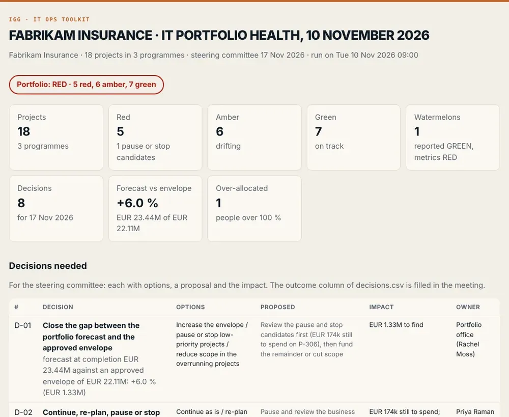

Un proyecto de captura de documentos figura en verde según su jefe de proyecto mientras cada euro que gasta compra 78 céntimos del trabajo previsto y su hito de construcción va seis semanas tarde. Así lo detecta la revisión de salud de la cartera de proyectos de IT que acompaña a este post, una semana antes del comité de seguimiento. Es un proyecto de código abierto que se ejecuta con datos de ejemplo de una aseguradora inventada, con tres programas y dieciocho proyectos en cascada, ágiles y SAFe, revisada el 10 de noviembre con los problemas puestos a propósito.
Esos 78 céntimos son el CPI, el índice de rendimiento del coste, y la herramienta lo calcula con una versión del valor ganado sencilla a propósito. El trabajo hecho vale el presupuesto por el % completado, o los puntos de historia hechos sobre el total en los proyectos ágiles. El trabajo previsto a día de hoy es el presupuesto por la parte del plazo que ya ha pasado, en línea recta. El CPI y su equivalente para el plazo, el SPI, salen de esos dos números, y el presupuesto dividido por el CPI dice dónde acaba el coste si lo que queda cuesta lo mismo que lo hecho.
Cinco proyectos en rojo y uno que solo es verde por fuera
En conjunto, la cartera de la demo está en rojo: 5 proyectos en rojo, 6 en ámbar y 7 en verde. Uno de ellos es lo que la herramienta llama un proyecto «sandía», verde por fuera y rojo por dentro, y la suma de todas las previsiones supera en un 6 % el presupuesto aprobado. La revisión muestra su VERDE, ÁMBAR o ROJO calculado, con el motivo, al lado del semáforo que puso el jefe de proyecto, por proyecto, por programa y en total.
El semáforo de un proyecto es su peor hallazgo en cada dimensión, y un programa está en rojo cuando lo está uno de sus proyectos críticos o un tercio de sus proyectos. Los umbrales están en un fichero de configuración pactado con el comité, y cada hallazgo tiene una gravedad, un responsable y una fecha.
Un arquitecto al 180 % y una puesta en producción en plena congelación
El arquitecto empresarial está planificado al 180 % entre tres proyectos críticos, así que los tres se retrasarán a la vez. La herramienta cuenta a una persona sobreasignada como ámbar en cada uno de esos proyectos, porque es un problema de la cartera y no de un solo proyecto.
El resto de hallazgos son de los que no se ven en unas diapositivas. El despliegue de Windows 11 lleva cinco semanas sin actualizar su estado. Un corte de red está planificado en plena congelación de cambios de fin de año, y otro proyecto sale a producción el viernes con su cambio todavía esperando al CAB, el comité de cambios. Un proyecto de automatización cuenta con un beneficio anual que nadie del negocio tiene a su cargo. El rediseño de la intranet, de prioridad baja, va tres meses tarde y un cuarto por encima del presupuesto, y nadie ha preguntado si debe seguir. Un portal ágil no deja de añadir alcance mientras su velocidad cae, y tres elementos del registro RAID, donde se apuntan riesgos y problemas, están vencidos y sin responsable.
Ocho decisiones para el comité, cada una con sus opciones
La revisión convierte los hallazgos en 8 decisiones para el comité, en un orden fijo: primero la diferencia con el presupuesto aprobado, después los proyectos en rojo y de prioridad baja que se podrían pausar o parar, los proyectos sandía, el resto de proyectos en rojo, las personas clave, las entregas dentro de una congelación y los beneficios sin responsable. Cada decisión lleva sus opciones (seguir, replanificar, pausar o parar), una propuesta, el impacto y un responsable. El objetivo es que el comité dedique su hora a decidir y no a repasar estados.
Cómo usarlo con datos reales
Los datos de entrada son la lista de proyectos de la herramienta de PPM, los hitos, el registro RAID, el plan de recursos, las entregas y el histórico de sprints de Jira o Azure DevOps. Un exportador de solo lectura toma los sprints cerrados de un tablero de Jira Cloud con la búsqueda de incidencias actual, o las iteraciones pasadas de un equipo de Azure DevOps con una consulta WIQL, con un token que se queda en memoria, y escribe los puntos comprometidos, completados y añadidos en cada sprint.
La herramienta funciona con Python y solo la librería estándar, y genera report.html, con un mapa de calor de la cartera, una ficha por proyecto, un gráfico de coste y plazo y la carga de recursos; steerco-pack.md, una página para el comité; y ficheros CSV con la salud de cada proyecto, los hallazgos, la carga de recursos, las decisiones y las acciones. Incluye 14 tests y un runbook para el comité mensual: qué enviar antes, el orden del día, cómo plantear las decisiones, cómo tratar los proyectos sandía sin buscar culpables y cómo seguir las acciones. La idea es ejecutarla una semana antes de cada comité, y cada semana para los proyectos en rojo.
De dónde sale
La hice a partir de gestionar una cartera de iniciativas, trabajar como Scrum Master y Product Owner con SAFe y el PI Planning, redactar casos de negocio con ROI y participar en la gestión de entregas y el comité de cambios. Detrás hay dos lecciones: el semáforo que alguien escribe y el que sale de los números hay que enseñarlos siempre juntos, porque la diferencia es la conversación; y parar un proyecto en rojo y de prioridad baja es un buen resultado, no un fracaso.
¿Quieres llevarlo a tu entorno o adaptarlo a tu caso? Escríbeme y lo vemos.
Tech Career Lab · newsletter
¿Te ha servido? Cada dos semanas envío una idea práctica para perfiles IT: LinkedIn, proyectos, networking y procesos de selección.
Apúntate y llévate las 33 ideas →